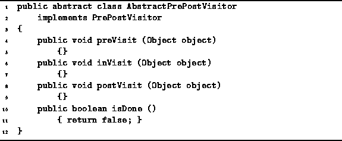

Data Structures and Algorithms
with Object-Oriented Design Patterns in Java
Data Structures and Algorithms
with Object-Oriented Design Patterns in JavaPreorder, inorder, and postorder traversals are special cases of the more general depth-first traversal described in the preceding section. Rather than implement each of these traversals directly, we make use a design pattern pattern, called adapter , which allows the single method to provide all the needed functionality.
Suppose we have an instance of the PrintingVisitor class
(see Section  ).
The PrintingVisitor class implements the Visitor interface.
However, we cannot pass a PrintingVisitor instance
to the depthFirstTraversal method shown in Program
because it expects an object that implements
the PrePostVisitor interface.
).
The PrintingVisitor class implements the Visitor interface.
However, we cannot pass a PrintingVisitor instance
to the depthFirstTraversal method shown in Program
because it expects an object that implements
the PrePostVisitor interface.
The problem is that the interface implemented by the PrintingVisitor does not match the interface expected by the depthFirstTraversal method. The solution to this problem is to use an adapter. An adapter converts the interface provided by one class to the interface required by another. For example, if we want a preorder traversal, then the call to the preVisit (made by depthFirstTraversal) should be mapped to the visit method (provided by the PrintingVisitor). Similarly, a postorder traversal is obtained by mapping postVisit to visit.
Program defines the
AbstractPrePostVisitor class.
This class implements the PrePostVisitor interface
defined in Program .
It provides trivial default implementations for all the required methods.

Program: AbstractPrePostVisitor class.
Programs , and define three adapter classes--PreOrder, InOrder, and PostOrder.
All three classes are similar:
They all extend the AbstractPrePostVisitor class
defined in Program ;
all have a single field that refers to a Visitor; and
all have a constructor that takes a Visitor.
Each class provides a different interface mapping. For example, the preVisit method of the PreOrder class simply calls the visit method on the visitor field. Notice that the adapter provides no functionality of its own--it simply forwards method calls to the visitor instance as required.
The following code fragment illustrates how these adapters are used:
Visitor v = new PrintingVisitor (); Tree t = new SomeTree (); // ... t.depthFirstTraversal (new PreOrder (v)); t.depthFirstTraversal (new InOrder (v)); t.depthFirstTraversal (new PostOrder (v));
 Copyright © 1998 by Bruno R. Preiss, P.Eng. All rights reserved.
Copyright © 1998 by Bruno R. Preiss, P.Eng. All rights reserved.